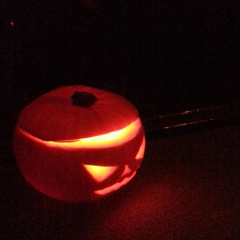
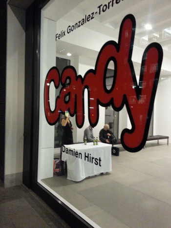
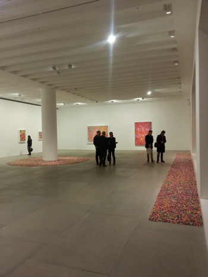

1.
하루걸러 한번씩 비오고 흐리고
건즈의 November Rain이 절로 생각난다;;
이맘때쯤 라디오에서 무진장 틀어주는뎅
최근 들은기억이 없넹;;

2.
할로윈 호박 첨으로 만들어봤다
(정확히는 눈/코만 파냈지만^^;;)
잼써 ㅋㅋㅋㅋ


3.
퇴근길 센트럴배회하다 우연히 발견
Candy - Demien Hirst
10월말 이사 + 한국서 북꼬북꼬씨 놀러옴 + 씐나게 질러놓은 공연티켓
으로 10월11월12월은 혼빼놓은채로 지나갈듯
올해는 정말 나 뭐했지;; 싶을정도로 빨리지나가는거 같다
내가 한국도 다녀오고
엄마님/칭구 등등 한국에서 온 방문객도 많았고
외주도 열심히 했고;; (영쿡애가 나보고 so asian이란다;;
너 야근싫어서 여기오지 않았냐구;;
근데 야근없다고 extra work를 한다고;; 그러게;; 쩝;;;;)
잼난 전시도 댕겨오고 뮤지컬도 봤구 할로윈날HIM공연도 댕겨왔구
런던 한국 영화제 숨바꼭질(잼써//손현주 배우도 봤당+_+)도 봤구
곧 여행도가고 공연(들)도 볼거구 매튜본씨 스완레이크도 예약해놨는데
블로그에 떠들시간이 없쒀.........ㅜㅜ
4.
주말에 북꼬북꼬와 함께 에딘버러 갑니다 :D
용감하게 아침7시 비행기 (체크인5am)
체력없어서 이제 공항노숙은 못하고
택시 예약해놨다 새벽3시반에..........;;;;;;
5.
올해초부터 막연하게 다가오는 생일에 Paris에 있어야겠어!!
란 생각을 했더랬다
사실 개인적 취향이라면 비슷한 시기에 다녀온
베를린이 더 좋았는뎅 (파리는 여행가기에는 좋고
베를린은 한번쯤 살아보고싶은 차이랄까^^;;)
무척 뜬금없이;; 무조건;; 이번 내생일날은 파리에서!! 로 결정 ㅡㅡ;;
뱅기 티켓끊어놨다^^ 3일에 가서
(1월) 4일 - 내생일날 - 온전히 24시간 파리에 있으면서
스테키썰고 슬렁슬렁 돌아댕기다 다음날 5일 런던으로 돌아올 계획^^
생일 자축으로 놀러가는만큼 이건 무식하게 새벽/저녁 뱅기 안타고
우아(?)하게 11am -1pm 사이 시간대로^^;;;;
6.
올 하반기는 할것도 많고 이벤트도 많고
너무너무 빨리지나가는 느낌
+ 난 올해 뭐한겨;;;;;;
체력은 여전히 즈질
이사하고 여기저기 좀 바빴(?)다고 바로 몸살났다 ㅡㅡ;;;
크흑 ㅜㅜ 하지만 아직 몸져누울수 없어;;;;;